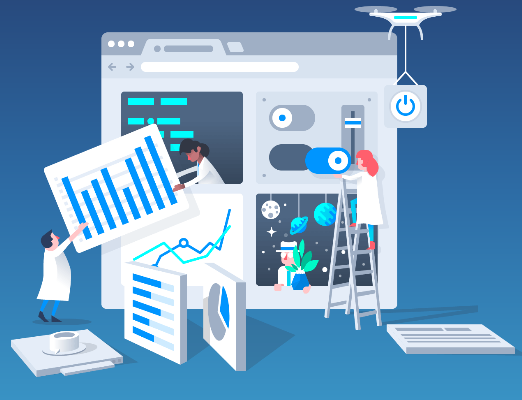
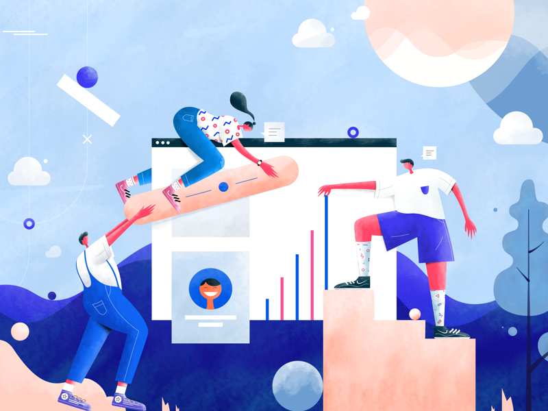

Impact of Technology in Daily Life
Introduction
The techniques used to simplify our works is technology. They are simply the collection of techniques. It has become a crucial part of our daily life. We rely on technologies to solve even the basic problems in our daily life. The rapid advancement of it is an essence to our life. Technology has a vast field of application and similarly has disadvantages too.
Positive Impact
We use technology for communication to make it faster and convenient. It has made the world a smaller place to be explored. It has its own implications in the business sector; be it about the products being competitive in the market, advertisement or even facilitating the delivery. We can depend on technologies to stay updated and know about what the world is up to in the simplest way. It has provided us the safest way to carry out transactions. It has made almost every of our daily works faster and easier. It is simply indispensable from our daily life.
Negative Impact

Even though the benefits are undeniable, it has the negative aspects too. Since it gets updated each second it becomes overwhelming sometimes to keep up with it. With the advancements our dependency on technology is also increasing. We are simply unable to do a lot without the help of technologies and it has for sure made us lazier. Technologies definitely mess up our social relations. Also, it has made invading anyone’s privacy much easier. It has made tracking someone’s life easier which is sometimes harmful. So technologies have risked our safety in many ways too.
Conclusion
If it has positivity it has negativity too. Use of technology by the wrong hand assures a lot to go wrong. So we should learn and be aware about making the proper use of the miracle we have created. We should be aware of how someone could use our information in a wrong way too. We should be accountable for our actions and be responsible enough not to make it a curse to human by human.